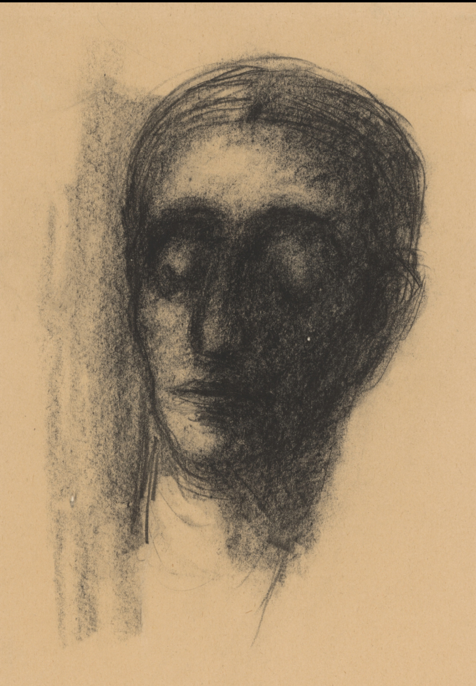
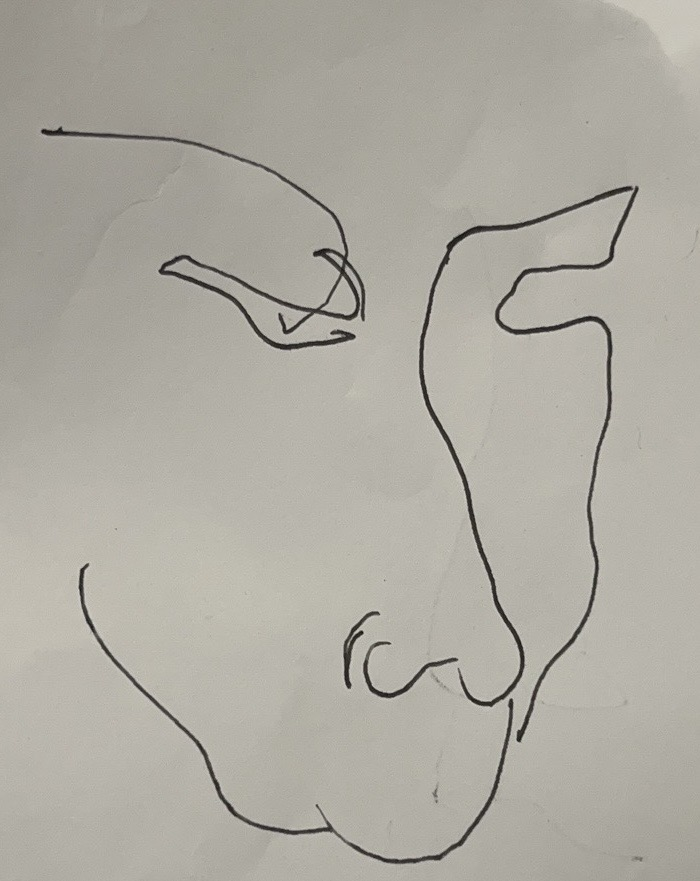
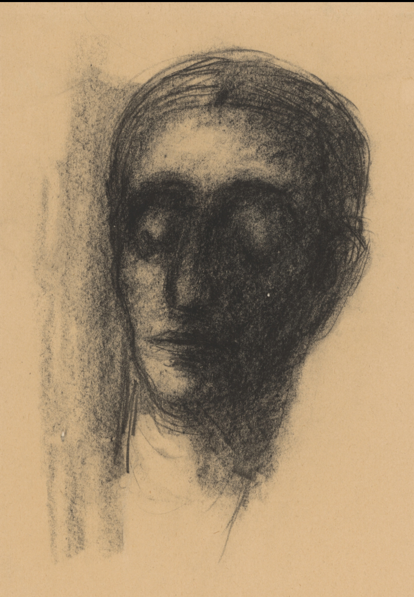
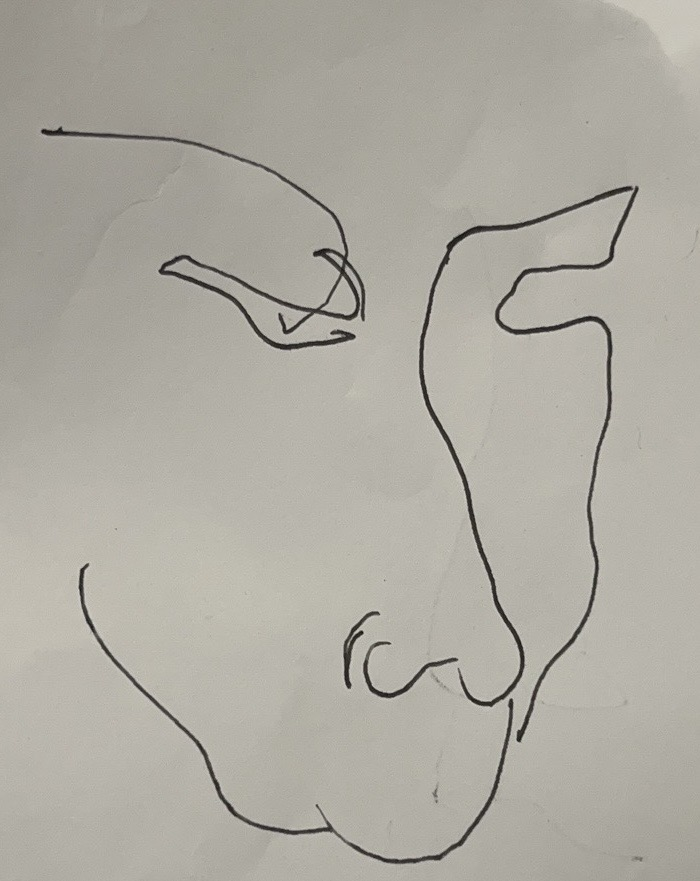

About Me

Hi, I'm Jun Wang, a jazz guitarist currently attending the Amsterdam Conservatory. I have studied under some of the greatest guitarists in the world, including Ben Monder, Daan Kleijn, Barry Greene, and Tom Ollendorff. Besides music, I am also a passionate painter.

 


